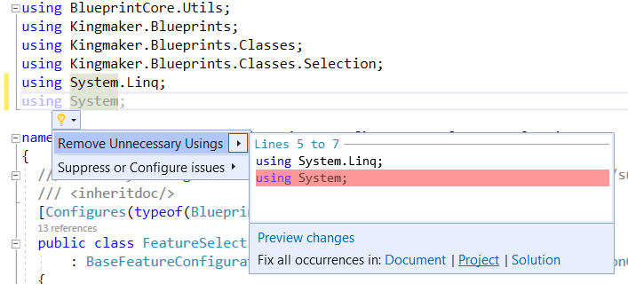

How to Contribute
Contributions are welcome!
- Fork the Project Repo
- Make your changes in the forked repo
- Submit a Pull Request
Local Project Setup
- Install NuGet Packages
- Configure Environment Variables
WrathPathenvironment variable must be the root installation directory for the game- Usually this is
C:\Program Files (x86)\Steam\steamapps\common\Pathfinder Second Adventure
- Usually this is
- Clean the project
- This copies the dependent assemblies to the project directory and publicizes Assembly-CSharp
- If you don't have Unity Mod Manager installed you need to add a reference to a Harmony assembly
- Configure Hard Links
- Delete the
docsfolder in the root directory andindex.mdin the root of the BlueprintCore project - Open an admin command promt, navigate to the solution's directory, and run the following commands:
mklink /h BlueprintCore\index.md README.mdmklink /j docs BlueprintCore\_site
- This is needed to update documentation when building changes
- Delete the
Note: It is recommended to build using the Debug configuration. The Release configuration generates documentation which takes several minutes.
Pull Request Requirements
- Change Description
- What was modified, removed, or added?
- Why is the change needed?
- Add/Update Unit Tests
- Code Style
- Limit lines to 120 characters
- Relaxed for comments, especially comments with long links
- 2 Space Indent, 4 Space Indent for wrapped lines
- Always use braces, even for one line statements
- Stay consistent with existing code and prefer common C# styling otherwise
- Remove unused and sort usings
- Limit lines to 120 characters
- Documentation
- Use XML style comments
- Builder and configurator methods that modify or create game types or fields must declare the type or field in their comment summary
- String arguments that are used to reference blueprints must declare the type of blueprint they represent
- No Patches
- Harmony patches are not allowed since the library may be included in multiple mods.
- Before Committing
- Rebuild the solution using the Release configuration to ensure documentation is updated
- Run all unit tests
- Note: If tests throw exceptions when adding blueprints from TestData just re-run them. There is an issue with static data sticking around that I have not been able to resolve.
Using BlueprintCoreGen
After making updates you can run the code generation directly in visual studio. Once it completes the output is in bin/<Release|Debug>/net5.0/:
- Run the powershell script
UpdateCodeGen.ps1in the output to propagate changes to theBlueprintCoreproject - Remove unused usings from the updated code in
BlueprintCore- In Visual Studio find an unused using, hit
Alt + Enter, and selectFix all occurrences in Solution
- In Visual Studio find an unused using, hit
What to Contribute
Documentation
This is likely the most helpful thing you can contribute. One of the biggest challenges to modding the game is understanding the behavior of game classes such as actions, conditions, and blueprint components.
If you use and understand the in game classes, update the corresponding configurator or builder method to explain the in-game effect and proper usage.
Template Blueprint Configurators
For blueprints with complex fields or field relationships, hand-written templates are preferable. They can also be used for custom validation code. When defining a new configurator:
- Implement configurators following the blueprint's type inheritance
- You must provide templates for all configurators in the inheritance tree up to BlueprintConfigurator. This is a limitation of code generation.
- Add a Generated attribute indicating which blueprint type is implemented
- Provide the appropriate
New()andFor()methods - Add methods for all fields defined in the blueprint, but not inherited fields
- Do not include component methods
Configurator and Builder Methods
For components, actions, and conditions with complex parameters or parameter relationships, hand-written templates are preferable.
Configurator method templates are defined in the BlueprintComponents folder and grouped logically into classes. Only the method definition is used, the class declaration is used to group templates.
Builder method templates are defined in the ActionsBuilder and ConditionsBuilder folders. They are defined directly in the output class.
- Add a Implements attribute to each method indicating which type is implemented
- Multiple methods can have the same implements attribute; they will be copied together into the relevant output class
- Method declarations should enforce required and optional parameters while providing sensible defaults
- Parameters with an object type defined in game library should be checked with the validator
- Use multiple methods for a type if there are distinct valid configurations
- Example: DealDamage and related methods
- When adding a builder method, remove the auto-generated comment attribute for types already represented
- Document the implemented game type in the method comment, as well as any usage restrictions
- Document the blueprint type of any string arguments used to reference blueprints
- Document parameters with value or usage restrictions
New Actions, Conditions, and Components
If you create new actions, conditions, or blueprint components that can be re-used, feel free to add them to the library.
- Implement the necessary configurator and builder methods to support them
New Utilities
If you have utilities that would help other modders, feel free to add them to the library.